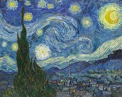

La noche estrellada
La noche estrellada es un óleo sobre lienzo del pintor posimpresionista neerlandés Vincent van Gogh . Pintado en junio de 1889, representa la vista desde la ventana orientada al este de su habitación de asilo en Saint-Rémy-de-Provence, justo antes del amanecer, con la adición de un pueblo imaginario.
Ha estado en la colección permanente del Museo de Arte Moderno de la ciudad de Nueva York desde 1941, adquirida a través de Lillie P. Bliss Bequest. Ampliamente considerada como la obra maestra de Van Gogh, La noche estrellada es una de las pinturas más reconocidas en la historia de la cultura occidental.
Fuente: https://es.wikipedia.org/wiki/La_noche_estrellada